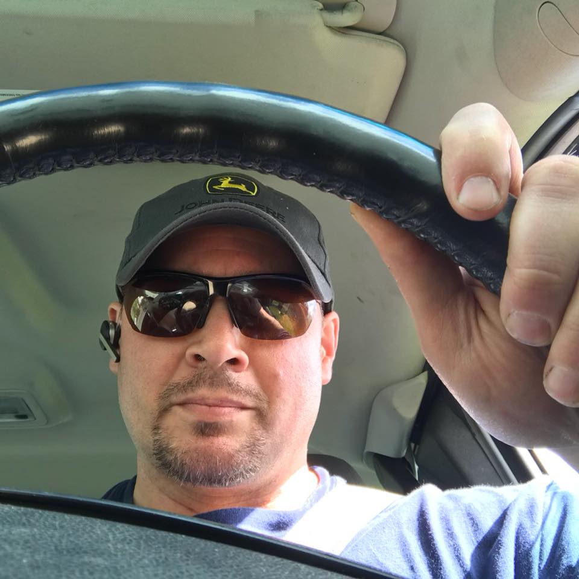

Civilian Life
I have been working for Hydraulex(formerly Hydraulic Repair and Design for 20 years. I've worn many hats durning my time at Hydraulex including hydraulic technician, Technical Sales, Technical Sales Team Lead and Territory Manager(current). I am a Certified Fluid Power Specialist and Certified Fluid Power Electronic Controls Specialist. Us veterans like our badges. I find that the thought process of anaylizing fluid power systems is similiar to coding in that both require algorithmic thinking. After over twenty years of working around maintenance of heavy equipment and trucks, I am ready for a career change and would like to transition web development. I've been building a website which focuses on hydraulic system design, contamination control and troubleshooting. It is work in progress.
My Family
I have a 22 year old son from my first marriage when I was stationed in Georgia. When he was younger, we enjoyed fishing together and doing indoor climbing. He is my pride and joy and is currently in his senior year at WSU studying Electrical Engineering
I have been married to my lovely wife Effie for 7 years now. We love to spend time together traveling, gardening, and cooking. She has been very supportive and has been encouraging me to make a career change into web development.